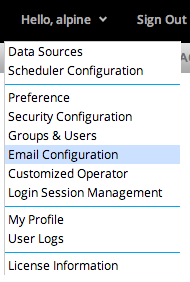
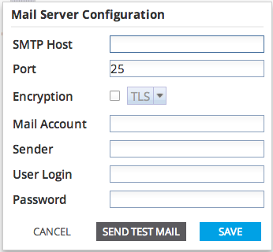

To open the Email Configuration dialog, click the user drop down button, then click the Email Configuration button on the drop down menu. In the Email Configuration dialog, specify the email address and server information to use when sending email from Alpine.

Enter the appropriate email server configuration information. Click "Send Test Mail" to test the email server configuration. Click the Save button to store the configuration. Clicking Cancel will close the dialog without storing.
